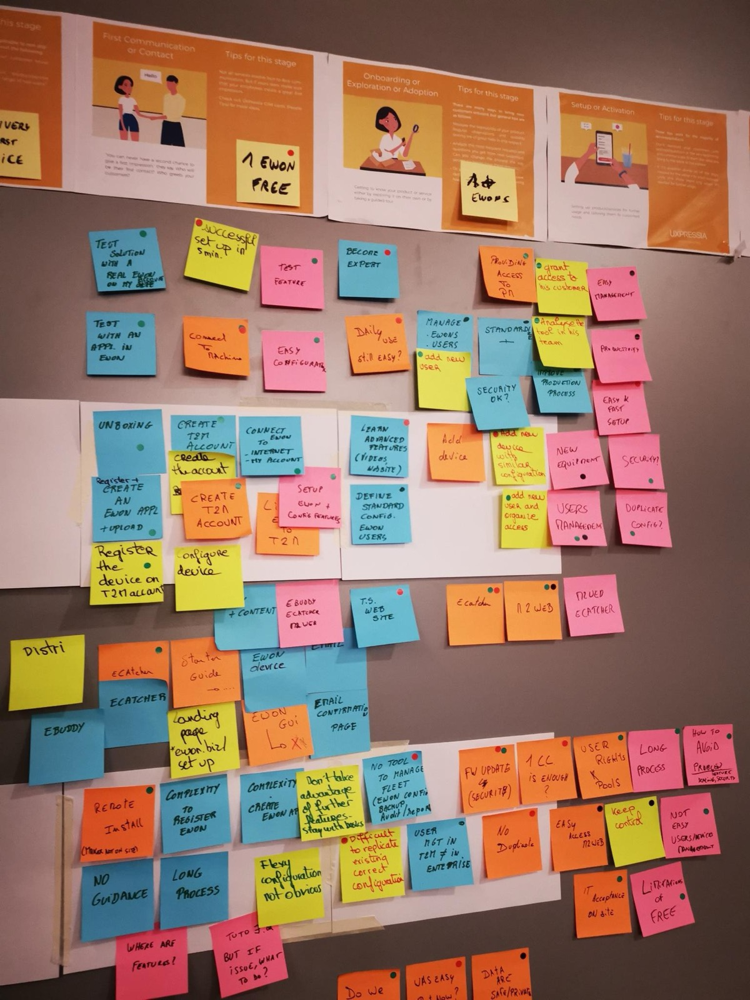
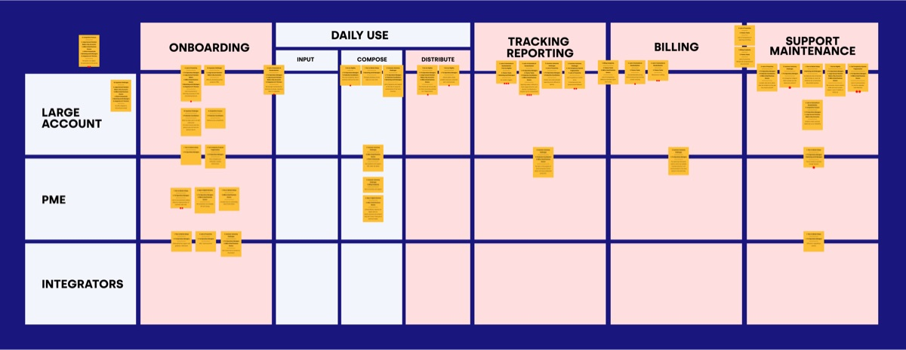
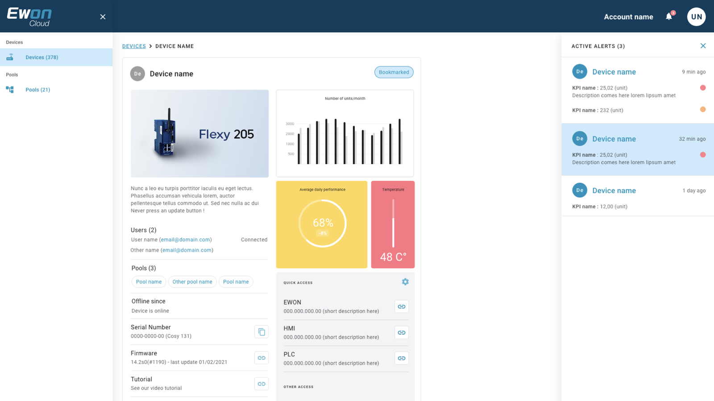

Large Accounts
Signature · solutions complexes, compliance haute
- Banques, assurances, télécoms
- Volumes massifs, parcours customisés bout-en-bout
- Standards de compliance élevés (RGPD, traçabilité)
Un an freelance pour faire converger eCatcher, M2Web et Talk2M autour de l'utilisateur.
Mission freelance · 12 mois · 2021 → 2022 · Service Design + UX/UI Consultant
Customer Journey workshops + Heuristic Evaluation Nielsen + Service Design Relevance · Simplicity · Consistency. Pas Strategyzer · le business model d'Ewon existait. Pas Design Sprint · le besoin était une transformation user-centric multi-mois, pas une décision de 5 jours. Le toolkit s'est choisi sur la maturité Agile et le besoin d'unification UX, pas sur un dogme.
Mandat · implémenter Design Thinking, user-centrism et digital transformation au sein d'une société purement IT. Mettre tous les chefs de département autour de la table — R&D, produit, business, service après-vente — identifier les frictions AS-IS, mesurer le gap TO-BE, prioriser via story mapping les sprints Agile.
Ewon by HMS Networks. Business Unit basée à Nivelles, en Belgique. Filiale d'un groupe industriel suédois (Halmstad), leader européen de la communication industrielle. Quatre brands au total · Anybus, Ewon, Intesis, Ixxat. La promesse Ewon · monitorer et contrôler les machines industrielles à distance, partout dans le monde.
Trois plateformes legacy à réunifier · eCatcher (desktop), M2Web (web), Talk2M (cloud SaaS). Pression concurrentielle d'IXON, startup cloud-native néerlandaise qui ne traînait pas de passé IT et qui était user-centric depuis le premier jour · self-onboarding automatisé, freemium, persona-driven. À l'arrivée chez Ewon · zéro self-onboarding, zéro analyse persona, pas de front-end basé sur un design system, pas de librairie front Angular en place. Le retard à combler n'était pas business · il était UX, UI, et culture.
À l'arrivée · des outils techniques solides, des clients fidèles dans le monde entier, et une vraie envie d'évoluer. Ce qui manquait · une vision produit unifiée, des parcours utilisateurs cohérents entre les trois plateformes, et la culture user-centric qui ferait passer Ewon de fournisseur d'outils à éditeur de plateforme.
De la friction Business ↔ IT à un MVP que tout le monde signe. Quatre actes méthodologiques, ateliers de co-création comme colonne vertébrale, customer focus comme boussole partagée.
À la sortie : un MVP one-stop platform priorisé en user stories, signé Project Owners (Business) · Project Managers (IT) · Operations · Sales. Six clients de typologies différentes ont validé le concept. Sponsor go prod. Ce qui suit montre ce qui s'est joué à chaque étape.
Pas pour vendre la méthode. Pour comprendre comment Ewon fabrique son industrial IoT au quotidien, et ce que chaque rôle attend d'une plateforme réunifiée.
« On reste leader, mais le marché bouge. Le digital nous met en concurrence frontale. »
Vision marché et vigilance concurrentielle. Veut un produit qui défend la position de leader avant le mandate B2B PEPPOL au 1er janvier 2026.
« On a des plateformes par segment. Elles ne se parlent pas. »
Architecture historique fragmentée. IT fraîchement passée à l'Agile, encore loin de SAFe. Cherche une stack maintenable, pas un patchwork.
« Je sais ce que veut mon client. L'IT ne m'écoute pas. »
Côté Business, propriétaires de l'offre commerciale. Frustrés par des cycles techniques opaques.
« Le Business change d'avis chaque sprint. On livre du flou. »
Côté IT, responsables livraison. Frustrés par des specs floues, des retours tardifs et des arbitrages politiques.
« Tout est dans nos têtes. Rien n'est documenté pour un client. »
Connaissance tacite du métier postal/print/mailing. Mémoire vivante de l'organisation.
« On absorbe les ratés en bout de chaîne. Tous les jours. »
Bras armé de la livraison. Visibilité directe sur ce qui casse côté client final.
12 expert interviews internes · CEO, CTO, Operations Director, ICT Operational Manager, Customer Service Manager, Production Manager, Marketing Director, Sales Director, Key Account Manager, IT Product Owner, IT Quality Assurance · noms cités dans le Concept Report (Vanhaeren, Damsin, Ide, Diederich, Roelands, Delcourt, D'hooge, Germonpré, Tran…) · 2024
Les six experts internes lisent l'organisation. Les huit clients lisent la machine telle qu'elle vit chez eux. C'est cette double écoute qui révèle le vrai parcours de l'utilisateur.
Aucun ne savait qu'il manquait quelque chose. Mais tous le décrivaient sans le nommer. Les ateliers Customer Journey ont mis ces mots sur le mur. Et les départements internes l'ont vu pour la première fois.
Trois logiques d'achat distinctes. Les Large Accounts achètent des solutions complexes avec haute compliance. Les PMEs achètent du standard, du low-touch, de l'autonomie. Les Integrators achètent une API et de la documentation. Une seule plateforme doit servir les trois sans dériver.
Signature · solutions complexes, compliance haute
Signature · standardisation, automatisation, self-service
Signature · partenaires, services SPEOS embarqués
Source · SPEOS Concept Report · pages 7-8 · 3 segments marché · 2024-2025. Concurrents observés en parallèle : Easypost, Doccle, plateformes de digital mail européennes.
Issues des 12 entretiens experts internes et des 10 personas testés terrain. Synthétisés en 8 archétypes dans le Concept Report. La carte qui a servi de boussole pour prioriser le MVP : à qui on parle, à quel moment du cycle, et avec quel ton.
Le pivot multicanal. Veut de l'automatisation, des API propres, un time-to-market raccourci.
Facturation, e-invoicing, conformité B2B/B2G. Tolère zéro erreur sur l'invoice routing.
Logistique d'impression et de mise sous pli. Tient les SLA J0, balance auto et humain.
Le KEY · banque, assurance, télécom. Renouvelle, escalade, signe. Aligne le vendor sur ses objectifs business.
Le KEY volume · Easy2Mail. Veut du standard, du low-touch, un onboarding sans IT.
Avocats, médecins, syndics. Workflows ultra-spécifiques, confidentialité non-négociable.
Optimise par canal et par préférence. Veut de la donnée actionnable, pas un dump.
Embarque SPEOS dans son offre. API stables, doc claire, pas de friction d'intégration.
Source · Speos Concept Report 2024 · 8 archétypes « Potential Personas » synthétisés sur 12 entretiens experts internes + 10 personas testés terrain.
Synthétiser huit archétypes est un acte d'arbitrage. Pour ne pas perdre la voix, je garde deux personas en deep-dive, qui incarnent les archétypes #1 IT & Operations Manager et #3 Production Coordinator vus chez les grands comptes Énergie. Mêmes horaires, mêmes anxiétés, mêmes phrases dans la salle.
Responsable Opérations Documentaires · grand compte Énergie
« Un bon outil, c'est un outil invisible quand tout va bien, et clair quand ça va mal. »
Profil composite · 12 entretiens experts internes + 10 personas testés terrain · 2024-2025
Expert Impression & Archivage · grand compte Énergie
« Pas un produit cool. Un cockpit ultra-fiable pour piloter ses documents. »
Profil composite · 12 entretiens experts internes + 10 personas testés terrain · 2024-2025
Source · personna_speos.docx · Speos research 2024-2025 · 2 personas en deep-dive sur 10 testés terrain · 8 archétypes synthétisés dans le Concept Report.
Six experts internes. Huit clients. Tous les départements autour de la même table. Les frictions ne sont plus discutées · elles sont épinglées. Là où elles bloquent vraiment.

Découverte · Contact · Onboarding · Production · Suivi & expansion. Les frictions sont positionnées sur la phase où elles émergent.
Le prospect identifie un besoin d'envoi à volume. Première recherche, comparaison concurrentielle.
Premier échange commercial. Cadrage du projet, devis, signature.
Intégration technique. Setup compte. Premier import de fichiers, validation.
Configuration campagne. Lancement. Impression, mise sous pli, livraison.
Tracking livraisons. Support. Facturation. Montée en volume, ouverture de nouveaux canaux.

Le passage des dix pain points aux onze opportunités est l'arbitrage clé de la phase Analyse. Pas de raccourci : chaque douleur a été reformulée en chance d'innover, sourcée verbatim dans le Concept Report. Ces onze pistes ne sont pas toutes scopées MVP. Cinq deviendront des Value Props livrables, six seront placées en MVP++ phase 2.
Self-service, real-time tracking, personalized dashboards par segment.
Automate repetitive tasks, intégrations API, self-onboarding pour les SMEs.
Email, SMS, print unifiés. Fallback automatique si un canal échoue.
Reporting BI, behaviors clients analysés, sector-specific insights.
Tiered Basic / Gold / Custom. Pay-as-you-go ou subscription pour les SMEs.
Multi-langue, multi-juridiction, conformité B2G adaptée pays par pays. MVP++.
Predictive analytics, alertes proactives avant que le client appelle.
Templates réutilisables + modular add-ons pour Large Accounts.
Consent management, drag-and-drop builders, payment integrations.
Tracking + billing + reporting + ticketing en un seul portail. Open API marketplace.
Advanced analytics, fallback mechanisms, positionnement « One Stop Shop ». MVP++.
Source · Speos Concept Report 2024 · « 11 Opportunities for Innovation » verbatim · synthèse des 12 expert interviews internes + 6 customer interviews.
Pour aligner Business, IT et Operations sur la voix du client, il a fallu sortir des slides. Deux régimes d'atelier ont rythmé la phase Analyse. Des petits ateliers ciblés avec les Project Managers et les figures clés côté IT pour caler les arbitrages techniques, en groupe restreint, au tableau. Des grands ateliers Customer Journey avec toutes les parties prenantes autour de la table — Business, IT, Operations, Customer Service — pour mettre le client au centre, pas l'org chart. Quatre formats au total, chacun avec un livrable concret. C'est par ces ateliers que la VP est apparue, pas par un canvas théorique.
Project Owners et Project Managers à la même table. Chaque équipe construit l'empathy map d'une persona client, puis confronte sa lecture. Effet immédiat : on découvre qu'on parle du même utilisateur, pas du même contrat.
Output : 6 empathy maps consolidées · langage user partagé.
Reconstruire la journey end-to-end avec les vrais acteurs internes (sales, ops, support, IT). Chaque touchpoint est validé par celui qui le tient. Les pain points sortent à l'oral, sont épinglés au mur.
Output : journey 5 phases · 10 pain points cartographiés · ownership clair par étape.
Chaque pain point est reformulé en opportunité. Les équipes votent les "how might we" qui méritent un MVP. Pas de débat sur le canvas, focus sur l'action priorisée.
Output : top 12 HMW · scoring impact / effort · backlog VP.
Le workshop final qui condense les outputs précédents en une seule formulation de VP. Chacun défend, ajuste, signe. Sortie de salle = VP partagée IT + Business + Innovation.
Output : VP en 1 phrase · alignement signé · go pour Diamant 2.
Approche Service Design · Customer Journey + Pain Points overlay · adaptée à une organisation early-Agile en change management. Pas de Lean Canvas. La parole et l'atelier comme outils.
Sur SPEOS, je ne suis pas entré par un Lean Canvas. Je suis entré par une Stakeholder Map et un Customer Journey AS-IS. Le contexte commande l'outil, pas l'inverse. Une organisation early-stage en transformation digitale a besoin de voir avant d'imaginer. Une Value Proposition se cristallise en sortie d'observation, pas en entrée de session.
Avant de proposer une solution, on a cartographié qui décide, qui exécute, qui valide, qui influence. Le Project Owner Business et le Project Manager IT n'avaient jamais été assis dans la même salle avec un objet partagé. La Stakeholder Map a été cet objet.
Source · Service Design / Stickdorn & SchneiderLa journey actuelle est posée sans accuser. Cinq phases, dix pain points épinglés là où ils font mal. La même journey, version cible, montre où on veut aller. Pas un argument. Une preuve visuelle posée sur un mur, qui résiste aux opinions.
Source · Service Design Network · NN/GStrategyzer entre dans le toolkit, pas comme entrée principale, comme outil d'extraction. Pour chaque persona, on liste les jobs à faire, les pains à éviter, les gains attendus. Le canvas ne porte pas le projet, il prépare le terrain de la VP.
Source · Strategyzer · Value Proposition CanvasEn atelier, chaque pain point se transforme en opportunité par la formule « how might we ». Les équipes votent, priorisent, jettent. Pas de débat sur le canvas, focus sur l'action. C'est ce qui produit le top 12 HMW qui devient le backlog VP.
Source · IDEO · Stanford d.schoolStrategyzer, Customer Journey, Service Blueprint, Design Sprint sont des outils du même Design System. La maîtrise, ce n'est pas d'en choisir un. C'est de savoir lequel, à quel moment, avec qui dans la salle.
Le pitch que j'ai porté à l'arrivée pour justifier la mission : montrer comment les grands comptes belges (banking, energy, telecoms) ont structuré leur fonction UX, et où SPEOS se trouvait sur cette ligne. Trois rôles. Deux modes d'organisation. Un choix d'architecture.
| Dimension | Classic approach | Best Practice (grands comptes belges · banking, energy, telecoms) |
|---|---|---|
| Business (ROI) | Define needs. | Work with UX to define expectations. |
| IT (Technology) | Implements solutions. | Focus on architecture & delivery. |
| UX (Users) | Rare or integrated into IT. | Dedicated, cross-functional, strategic department. |
Le pattern Best Practice est déployé depuis 15+ ans aux États-Unis (Amazon, IBM, Capital One) et 10+ ans en Europe dans les secteurs complexes (banking, energy, telecoms). À l'arrivée chez SPEOS, je ne réinventais rien : je transposais un pattern industrialisé.
Source · pitch méthodologique CVE porté à l'interne SPEOS · 2024.
Douze experts internes. Six clients interviewés. Dix personas testés terrain. Trois segments marché. Dix pain points cartographiés. Quatre ateliers cocréation. Tout converge. Pas vers un canvas, vers une phrase.
Source · SPEOS Concept Report 2024-2025 · synthèse Discovery + Analyse + ateliers cocréation
Avant la VP, chaque rôle défendait sa lecture. Project Owners voulaient des features vendables. Project Managers voulaient une stack maintenable. Les clients juxtaposaient cinq logins. Après, une phrase tient debout : un host orchestré, des personas reconnus, dix douleurs traduites en cinq livrables MVP, six de plus en MVP++. C'est cette VP qui rend l'Ideation légitime.
Pas une plateforme par segment. Une plateforme orchestrée.
Source · Concept Report SPEOS 2024 · slide « VP statement » verbatim
10 personas testés terrain · 8 archétypes synthétisés. Voici 2 d'entre eux, illustratifs.
Nicolas · 45 ans · Responsable Opérations Documentaires · grand compte Énergie
« Un bon outil, c'est un outil invisible quand tout va bien, et clair quand ça va mal. »
Moustafa · 62 ans · Expert Impression & Archivage · grand compte Énergie
« Pas un produit cool. Un cockpit ultra-fiable pour piloter ses documents. »
Trois jobs-to-be-done partagés : reprendre la main, réduire les zones d'ombre, disposer d'outils calés sur leurs horaires (support 5h30) et leurs enjeux compliance.
La mécanique du Concept Report verbatim. Les 10 pain points produisent 11 opportunités, dont 5 livrables sont scopés MVP, 6 placés MVP++.
| 10 Pain Points | 5 VPs MVP livrées |
|---|---|
| 1. Time-to-Market Delays | VP 01 Onboarding · IT-less |
| 2. Lack of Automation | VP 01 Onboarding |
| 3. Customer Autonomy | VP 02 Monitoring · real-time |
| 4. Tool Complexity | VP 03 Reports & Archives |
| 5. Lack of Proactivity | VP 02 Monitoring |
| 6. Gaps in Digital | VP 03 Reports |
| 7. Service Rigidity | VP 05 Support · self-service |
| 8. Competitive Pressure | VP 02 + VP 05 |
| 9. Billing Complexity | VP 04 Billing · tiered |
| 10. Expansion Challenges | placé MVP++ |
MVP / MVP++ scope. 5 livrables MVP couvrent les 6 phases du Customer Lifecycle. Les opportunités Market Expansion et Marketplace API Integrators sont scopées MVP++ phase 2, post-validation host one-stop.
À la sortie de cette VP, Project Owners (Business), Project Managers (IT), Operations et Sales partagent la même phrase, les mêmes deux personas, la même traduction des dix douleurs en cinq livrables MVP. C'est ce socle commun qui rend l'Ideation légitime. On n'arbitre plus sur le « quoi », on arbitre sur le « quand » et le « comment ».
Suite logique → Ideation · Develop · 2 directions explorées, une retenueÀ la sortie des ateliers Customer Journey, deux pistes étaient sur la table. À gauche, conserver chaque produit dans son silo (easy2mail, built2mail, e-Invoicing, archive eIDAS, support) avec son propre login et son propre back-office. Solution rapide à livrer mais qui reproduit la fragmentation que les clients eux-mêmes pointaient. À droite, un host one-stop, avec un onboarding piloté par persona et par typologie de besoin, et des capacités API-isées en dessous. C'est la deuxième direction qui a été retenue, validée par le sponsor, puis testée chez 6 clients pilotes. La direction silo aurait livré en 6 mois. La direction one-stop a doublé le temps de dev. Le sponsor a accepté le coût parce que le pricing tiered ouvre le segment PME laissé aux concurrents.
Cinq apps cloisonnées, cinq logins, cinq supports. Le client jongle, l'IT maintient cinq stacks, le Business vend cinq produits au lieu d'une plateforme. La solution la plus rapide à livrer, mais celle qui reproduit la fragmentation pointée par les 12 entretiens experts.
Aucun choix à faire. La plateforme reconnaît Joseph, son rôle, ses tâches, son segment. KPI et notifications sont déjà cadrés sur ses goals. Une stack pour l'IT, une plateforme pour le Business, une page d'accueil pour chaque persona.
Pas une suite de produits avec une porte chacun. Un host orchestré, piloté par persona et typologie de besoin.
Source · Speos Concept Report 2024 · synthèse Discovery + ateliers cocréation, validée par CEO et CTO avant prototyping
eCatcher, M2Web, Talk2M · trois cultures techniques, trois interfaces, un seul utilisateur. Le Cloud Revamp les fait converger autour de la machine, pas autour de l'org chart.

Cinq Value Props qui forment une seule boucle d'expérience. Le client entre par l'onboarding, monitore en continu, archive ses preuves, paie ce qu'il consomme, et résout ses incidents en self-service. Le cycle reboucle sur le prochain produit, le prochain volume, le prochain canal.
5 livrables MVP sur 11 opportunités identifiées · les 6 autres (notamment Market Expansion internationale et Marketplace API Integrators) sont scopées MVP++ phase 2, après validation du host one-stop.
Source · Speos Concept Report 2024 · 5 VP cartographiées sur le pipeline ingest → compose → distribute → archive (Roadmap p17)
Value Proposition · verbatim Concept ReportNotre onboarding sans IT aide les Customer Account Managers qui veulent onboarder rapidement de nouveaux clients, en supprimant les dépendances IT et en accélérant le time-to-market.
Le client configure et monitore ses campagnes lui-même, sans ouvrir de ticket IT. Source : Concept Report · Opportunity 1 · Enhanced Customer Experience.
Vues sur mesure pour Large Accounts, PMEs et secteurs spécifiques (Finance, Operations, BI). Le wizard sait qui est devant lui.
Process simplifié pour les petites structures. Source : Concept Report · Opportunity 2 · Automation & Scalability.
Value Proposition · verbatim Concept ReportNotre monitoring temps réel aide les équipes Operations et Business qui veulent tracer les flux documents avec confiance, en fournissant une visibilité end-to-end, des alertes proactives, et en réduisant les risques et la dépendance au support.
Le pipeline ingest → compose → distribute est rendu observable étape par étape. Plus besoin d'appeler le Customer Service pour savoir où en est un envoi.
Le système notifie l'incident avant que le client ne s'en aperçoive. Source : Concept Report · Opportunity 7 · Proactive Customer Engagement.
Si le canal digital échoue, fallback print en un clic. Source : Concept Report · Opportunity 3 · Multi-Channel Integration.
Value Proposition · verbatim Concept ReportNos Reports & Archives aident les équipes Finance, Compliance et Operations qui ont besoin de maîtriser les coûts, garantir la traçabilité et rester compliant, en délivrant des rapports structurés, des archives centralisées et des preuves audit-ready, accessibles à un seul endroit.
Value Proposition Billing · verbatim Concept ReportNotre billing aide les mêmes équipes en délivrant un accès centralisé aux rapports structurés, preuves légales et archives d'usage, réduisant le travail manuel et les processus error-prone.
Chaque flux génère sa preuve à la souche. eIDAS trusted service. Conformité B2G PEPPOL pour le mandate belge 1er janvier 2026.
Niveaux Basic / Gold / Custom. Pay-as-you-go ou subscription pour les SME. Source : Concept Report · Opportunity 5 · Flexible Pricing Models.
Chaque ligne de facture pointe vers la batch d'origine. Les Finance Teams arrêtent de réconcilier des CSV. Source : Pain Point 9 Billing Complexity.
Value Proposition · verbatim Concept ReportNotre plateforme de support intégrée aide les utilisateurs opérationnels qui gèrent des flux critiques (documents, factures, mailings), qui veulent plus d'autonomie, de visibilité, et une résolution plus rapide de leurs incidents techniques, en offrant un portail self-service avec création de tickets, suivi temps réel, priorités SLA et accès direct aux équipes tech quand nécessaire — à la différence des modèles traditionnels qui reposent sur des processus lents, manuels, et sur des goulots d'étranglement humains.
Création de tickets, suivi live, knowledge base par persona. L'utilisateur résout d'abord, escalade si nécessaire.
Tier 1 self-service · Tier 2 SPEOS support sur SLA · Tier 3 accès Engineering. Le bottleneck humain devient un escalator.
Un même portail pour onboarding, monitoring, billing, archives. Source : Concept Report · Opportunity 10 · Unified Client Portal.
Deux capacités identifiées en Discovery, placées hors MVP. Elles n'attendent que la consolidation du host pour s'activer. Source : Concept Report · Opportunity 6 (Market Expansion) + Opportunity 11 (Competitive Differentiation).
Multi-langue, multi-juridiction, conformité B2G adaptée pays par pays. La stack API et le pricing tiered rendent l'expansion économiquement viable, là où la dépendance au volume papier belge la plafonnait.
Le 3e segment Concept Report, Integrators et Resellers, embarque les Value Props dans leur propre offre. Le marketplace expose les API, la doc et le pricing partenaire. Croissance par effet de levier.
Le Concept Report est présenté aux six clients pilotes. Les six valident la direction one-stop. Luminus en faisait partie.
En parallèle, deux personas Énergie — Moustafa et Bogdan — passent le SUPERQ sur trois scénarios prototype · Dashboard temps réel, Gestion des erreurs, Audit Trail. Cinq critères, NPS sur dix.
Score combiné 4,4 / 5 — 88%
Score combiné 4,1 / 5 — 82%
Score combiné 3,6 / 5 — 72%
Le Dashboard et la Gestion des erreurs passent. L'Audit Trail tient moins · Moustafa note la Réassurance 1 / 5 sur la valeur de preuve légale. Zone identifiée, rentrée dans la roadmap d'itération.
Sources · Speos Concept Report 2024 (validation 6/6) · Engie User Test Session — Dashboard & Error Management 2025 (méthode SUPERQ + NPS, testeurs Moustafa et Bogdan).
Énergie · gros volume multicanal · validation forte sur l'orchestration et l'audit-ready. La référence qui rassure le sponsor.
Compliance B2G + multi-langue. Validation sur la conformité, demande d'expansion en phase 2.
Volume modéré, exigence confidentialité. Validation forte sur l'IT-less onboarding.
Validation sur le pricing tiered et la facturation lisible. Pay-as-you-grow demandé.
Embarque SPEOS dans son offre clients. Demande prioritaire : marketplace API et doc partenaire.
Validation API. Reproductible chez ses propres clients ERP, effet de levier identifié.
« Pour la première fois, on avait un signal de validation client avant le développement. Le sponsor ne se demandait plus si la direction tenait, il se demandait quand le rollout commence. »
Tests menés en présentation directe et co-design chez les 6 clients pilotes · 3 segments couvrant Build-to-Mail, Easy2Mail et Integrators · Speos Concept Report 2024
Au démarrage, chaque rôle défendait sa lecture. Le Project Owner côté Business voulait des fonctionnalités vendables. Le Project Manager côté IT voulait une stack maintenable. Le Project Lead arbitrait sur le calendrier. Deux formats d'atelier ont fait le pont. Des petits ateliers ciblés avec les Project Managers et les figures clés côté IT pour caler les arbitrages techniques. Des grands ateliers Customer Journey avec toutes les parties prenantes autour de la table, pour mettre le client au centre, pas l'org chart.
Friction · la rente print s'érode pendant que les concurrents agiles capturent les PME. La Value Proposition multicanale et le pricing tiered ont ouvert l'expansion et capturé le segment Easy2Mail.
Friction · envie de coder avant d'aligner. Le Customer Journey AS-IS posé sur les 12 entretiens experts a fermé le débat · cinq systèmes déconnectés à orchestrer et 10 Pain Points cartographiés avant la moindre ligne MVP.
Friction · tenir le calendrier face à la volonté de tout faire. Le scope MVP a tranché à 5 Value Props, le reste placé en roadmap phase 2. Une décision écrite, pas un compromis flou.
Friction · l'expérience reste impensée si on découpe par fonctionnalité. Le persona-first onboarding et le test des 6 clients pilotes ont sécurisé le signal sponsor · Luminus parmi eux.
La plateforme ne tenait que si les trois sommets gagnaient. Une idée qui faisait gagner deux et perdre un était écartée. Pas de compromis, pas de moyenne. Trois critères, pas une moyenne.
Large Accounts (built2mail), PME (easy2mail), Integrators. Trois segments, trois entrées dans la même plateforme. Onboarding piloté par persona, autonomie self-service, audit-ready par défaut. Le client arrête de jongler entre les apps.
Le pricing tiered ouvre le segment PME laissé aux concurrents agiles. Le multicanal print et digital sans couture libère SPEOS de la dépendance au volume papier. La position de leader compliance se consolide à l'approche du mandate B2B 2026.
L'orchestration remplace les silos hérités. API-fication par couche, pipeline observable, fallback automatique entre canaux. L'IT maintient une plateforme, plus cinq dettes héritées.
Toute idée qui ne validait pas les trois sommets était écartée. Trois critères, pas une moyenne.
Un an d'accompagnement refermé sur un Concept Report priorisé, un design system prêt prod, et tous les flots et prototypes testés et scorés. Le sponsor qui m'avait engagé a présenté ce travail à sa direction. Résultat · 2 millions d'euros de budget supplémentaire pour passer le concept en production, et une promotion personnelle.
Tous les futurs services priorisés via story mapping. Lecture transverse Business + R&D + Service après-vente. Le document que le sponsor a porté en comité de direction pour défendre l'investissement.
Tokens, composants, patterns d'interaction. Tous les flots et prototypes testés avec des clients réels, scorés sur Simplicité, Utilité, Pertinence, Réassurance, Qualité. Pas une intention de design system. Le matériel qui passe en sprints.
Face à IXON, cloud-native néerlandais qui visait le même segment industrial IoT, Ewon a installé une posture user-centric défendable. Le toolkit est passé du fournisseur d'outils techniques à l'éditeur de plateforme. Position consolidée, pas érodée.
Le succès n'est pas qu'un chiffre, c'est un transfert de culture. Une société purement IT a accepté de mettre l'utilisateur au centre. Customer Journey workshops, Heuristic Evaluation Nielsen, Service Design Relevance/Simplicity/Consistency · le toolkit a fait le travail parce qu'il a été choisi selon la maturité Agile d'Ewon, pas par dogme. Et le sponsor a décroché le budget pour que ce travail vive en production.
Note d'intégrité. Le Concept Report a été remis, validé, et présenté en comité de direction par le sponsor qui m'avait engagé. Le sponsor a obtenu 2 M€ de budget supplémentaire et une promotion personnelle. Le rollout en production est ensuite passé en sprints Agile côté équipes Ewon, après mon départ.
Un an après la livraison, trois choix méthodologiques tiennent encore. Rien à rejouer autrement · la mission a tenu son contrat, le sponsor a décroché le budget pour la mise en prod, et l'organisation a accepté l'utilisateur comme boussole.
Strategyzer, Customer Journey, Heuristic Evaluation Nielsen, Service Blueprint, Design Sprint, story mapping sont des outils du même Design System. La maîtrise, ce n'est pas d'en choisir un. C'est de savoir lequel, à quel moment, avec qui dans la salle. Chez Ewon, Customer Journey workshops + Heuristic Evaluation Nielsen + framework Relevance/Simplicity/Consistency avaient le bon ratio narratif et précision pour faire converger trois plateformes legacy.
Une société purement IT n'écoute pas un consultant qui parle au seul Product Manager. Ce qui a fait basculer Ewon · les ateliers Customer Journey ont réuni R&D, produit, business, service après-vente, support — tous les chefs de département dans la même salle. La Value Proposition n'a pas été imposée par la direction. Elle est née de la table où chacun reconnaissait son client.
Tous les flots et tous les prototypes ont été testés avec des clients internationaux et scorés. Un test qui ne donne pas un chiffre n'est pas un test, c'est un atelier de réassurance. Le scoring rend les arbitrages défendables en comité, et c'est ce qui a permis au sponsor de transporter le travail jusqu'au budget de production.
Références disponibles sur demande pour un projet réel. Les responsables managers Ewon des différents départements — R&D, produit, business, service après-vente, support — savent ce qui s'est passé pendant ces douze mois. C'est ça, la matière du Service Design : des gens qui te rappellent.
La méthode ne vaut rien tant qu'elle ne décide rien.